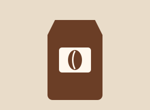

Cafés especiales cultivados a 1.800 metros en las montañas de Risaralda.
Ver nuestros cafés
Origen: Santuario, Risaralda · Notas: chocolate y panela.
$32.000 · 500 g

Origen: Apía, Risaralda · Notas: jazmín y durazno.
$58.000 · 250 g

Origen: Belén de Umbría · Notas: miel y frutos rojos.
$41.000 · 500 g

Desde 1987 la familia Restrepo cultiva café de forma sostenible. Hoy tostamos en pequeños lotes para que cada bolsa conserve el sabor de su origen.